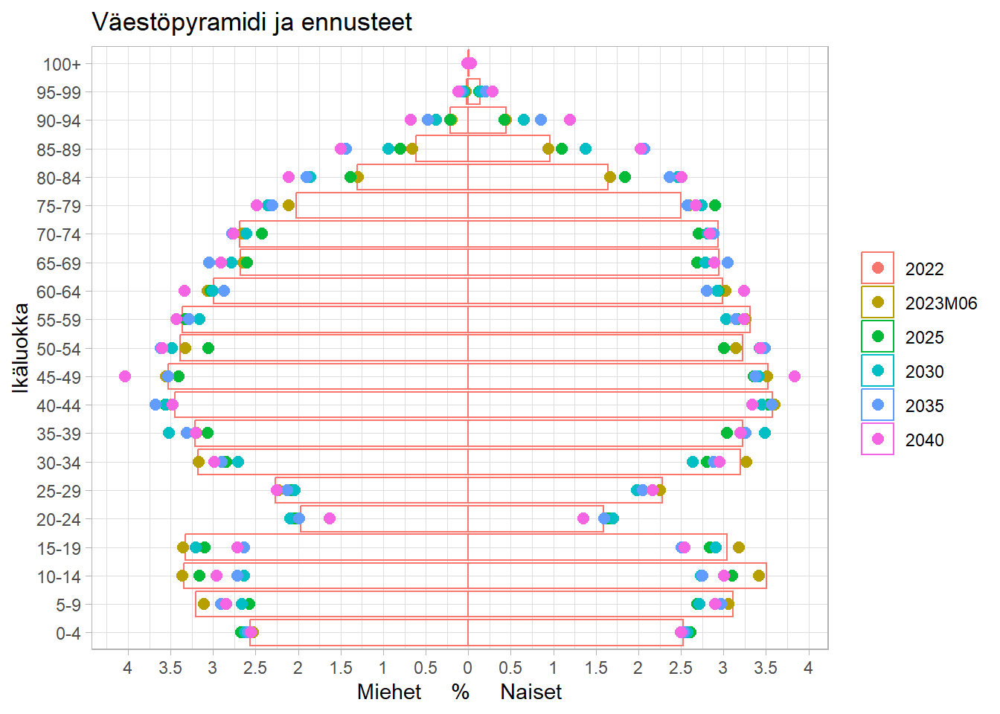

Väestö
Väkiluku
Väkiluvun muutos
| Vuosi | Väestö 31.12. | Muutos | Muutosprosentti |
|---|---|---|---|
| 1990 | 24407 | 353 | 1.5 |
| 1991 | 24634 | 227 | 0.9 |
| 1992 | 24826 | 192 | 0.8 |
| 1993 | 25105 | 279 | 1.1 |
| 1994 | 25056 | -49 | -0.2 |
| 1995 | 25106 | 50 | 0.2 |
| 1996 | 25046 | -60 | -0.2 |
| 1997 | 25119 | 73 | 0.3 |
| 1998 | 25133 | 14 | 0.1 |
| 1999 | 25285 | 152 | 0.6 |
| 2000 | 25630 | 345 | 1.4 |
| 2001 | 25922 | 292 | 1.1 |
| 2002 | 26341 | 419 | 1.6 |
| 2003 | 26778 | 437 | 1.7 |
| 2004 | 27303 | 525 | 2 |
| 2005 | 27927 | 624 | 2.3 |
| 2006 | 28407 | 480 | 1.7 |
| 2007 | 28809 | 402 | 1.4 |
| 2008 | 29282 | 473 | 1.6 |
| 2009 | 29522 | 240 | 0.8 |
| 2010 | 29675 | 153 | 0.5 |
| 2011 | 29891 | 216 | 0.7 |
| 2012 | 30126 | 235 | 0.8 |
| 2013 | 30345 | 219 | 0.7 |
| 2014 | 30471 | 126 | 0.4 |
| 2015 | 30607 | 136 | 0.4 |
| 2016 | 31190 | 583 | 1.9 |
| 2017 | 31437 | 247 | 0.8 |
| 2018 | 31676 | 239 | 0.8 |
| 2019 | 31868 | 192 | 0.6 |
| 2020 | 32214 | 346 | 1.1 |
| 2021 | 32622 | 408 | 1.3 |
| 2022 | 32959 | 337 | 1 |
| Lähde: | |||
| Tilastokeskus: 11ra -- Tunnuslukuja väestöstä alueittain, 1990-2022 |
Syntyneet, kuolleet ja muuttoliike
Luonnollinen muutos
|
Muuttoliike
|
||||||
|---|---|---|---|---|---|---|---|
| Vuosi | syntyneet | kuolleet | syntyneiden enemmyys | kuntien välinen netto | kansainvälinen netto | Väestönlisäys | Väkiluku |
| 2005 | 360 | 212 | 148 | 454 | 19 | 621 | 27927 |
| 2006 | 389 | 203 | 186 | 285 | 11 | 482 | 28407 |
| 2007 | 408 | 203 | 205 | 168 | 29 | 402 | 28809 |
| 2008 | 404 | 190 | 214 | 218 | 38 | 470 | 29282 |
| 2009 | 394 | 236 | 158 | 53 | 18 | 229 | 29522 |
| 2010 | 394 | 262 | 132 | -11 | 26 | 147 | 29675 |
| 2011 | 360 | 228 | 132 | 61 | 24 | 217 | 29891 |
| 2012 | 364 | 235 | 129 | 99 | 2 | 230 | 30126 |
| 2013 | 356 | 207 | 149 | 46 | 27 | 222 | 30345 |
| 2014 | 327 | 247 | 80 | 4 | 41 | 125 | 30471 |
| 2015 | 313 | 241 | 72 | 74 | 8 | 154 | 30607 |
| 2016 | 365 | 223 | 142 | 395 | 46 | 583 | 31190 |
| 2017 | 290 | 276 | 14 | 213 | 21 | 248 | 31437 |
| 2018 | 284 | 249 | 35 | 201 | 11 | 247 | 31676 |
| 2019 | 301 | 253 | 48 | 115 | 28 | 191 | 31868 |
| 2020 | 280 | 222 | 58 | 250 | 38 | 346 | 32214 |
| 2021 | 334 | 296 | 38 | 378 | -4 | 412 | 32622 |
| Lähde: | |||||||
| Tilastokeskus: Alueaikasarjat 1987-2021 - Kuntien avainluvut | |||||||
Väestöpyramidi

Väestö tilasto- ja pienalueittain
| Osa-alue | 2020 | 2021 | Muutos 21-20 | Muutos 21-20% | 2022 | Muutos 22-21 | Muutos 22-21% |
|---|---|---|---|---|---|---|---|
| 211 Kangasala | 32214 | 32622 | 408 | 1.3 | 32959 | 337 | 1.0 |
| 2111 Länsi-Kangasala | 28883 | 29316 | 433 | 1.5 | 29682 | 366 | 1.2 |
| 211101 Eteläosa | 767 | 772 | 5 | 0.7 | 756 | -16 | -2.1 |
| 211101001 Saarenmaa | 359 | 349 | -10 | -2.8 | 342 | -7 | -2.0 |
| 211101002 Haapaniemi | 231 | 236 | 5 | 2.2 | 232 | -4 | -1.7 |
| 211101003 Kuohenmaa | 177 | 187 | 10 | 5.6 | 182 | -5 | -2.7 |
| 211102 Vatiala | 5556 | 5636 | 80 | 1.4 | 5800 | 164 | 2.9 |
| 211102001 Ilkko | 1395 | 1462 | 67 | 4.8 | 1483 | 21 | 1.4 |
| 211102002 Vatiala | 4161 | 4174 | 13 | 0.3 | 4317 | 143 | 3.4 |
| 211102003 Lamminrahka | 0 | 0 | 0 | 0 | 0 | ||
| 211103 Suorama | 7621 | 7729 | 108 | 1.4 | 7692 | -37 | -0.5 |
| 211103001 Lentola | 5494 | 5591 | 97 | 1.8 | 5550 | -41 | -0.7 |
| 211103002 Asema | 2127 | 2138 | 11 | 0.5 | 2142 | 4 | 0.2 |
| 211104 Pohjoisosa | 3953 | 3951 | -2 | -0.1 | 3976 | 25 | 0.6 |
| 211104001 Ruutana | 2924 | 2935 | 11 | 0.4 | 2960 | 25 | 0.9 |
| 211104002 Suinula | 878 | 872 | -6 | -0.7 | 879 | 7 | 0.8 |
| 211104003 Lihasula | 151 | 144 | -7 | -4.6 | 137 | -7 | -4.9 |
| 211105 Keskusta | 9294 | 9568 | 274 | 2.9 | 9816 | 248 | 2.6 |
| 211105001 Ranta-Koivisto | 1303 | 1335 | 32 | 2.5 | 1383 | 48 | 3.6 |
| 211105002 Riku | 827 | 852 | 25 | 3.0 | 912 | 60 | 7.0 |
| 211105003 Keskusta | 5588 | 5801 | 213 | 3.8 | 5950 | 149 | 2.6 |
| 211105004 Huutijärvi | 1576 | 1580 | 4 | 0.3 | 1571 | -9 | -0.6 |
| 211106 Keskiosa | 1692 | 1660 | -32 | -1.9 | 1642 | -18 | -1.1 |
| 211106001 Tiihala | 209 | 196 | -13 | -6.2 | 184 | -12 | -6.1 |
| 211106002 Saarikylät | 217 | 212 | -5 | -2.3 | 218 | 6 | 2.8 |
| 211106003 Vääksy | 321 | 314 | -7 | -2.2 | 310 | -4 | -1.3 |
| 211106004 Raudanmaa | 621 | 622 | 1 | 0.2 | 615 | -7 | -1.1 |
| 211106005 Raikku | 324 | 316 | -8 | -2.5 | 315 | -1 | -0.3 |
| 2112 Itä-Kangasala | 3086 | 3065 | -21 | -0.7 | 3012 | -53 | -1.7 |
| 211201 Sahalahti | 2143 | 2128 | -15 | -0.7 | 2118 | -10 | -0.5 |
| 211201001 Sahalahti | 1344 | 1320 | -24 | -1.8 | 1338 | 18 | 1.4 |
| 211201002 Lahdenkulma | 348 | 342 | -6 | -1.7 | 343 | 1 | 0.3 |
| 211201003 Pakkala | 451 | 466 | 15 | 3.3 | 437 | -29 | -6.2 |
| 211202 Kuhmalahti | 943 | 937 | -6 | -0.6 | 894 | -43 | -4.6 |
| 211202001 Kuhmalahden kirkonkylä | 564 | 557 | -7 | -1.2 | 524 | -33 | -5.9 |
| 211202002 Pohja | 250 | 249 | -1 | -0.4 | 247 | -2 | -0.8 |
| 211202003 Vehkajärvi | 129 | 131 | 2 | 1.6 | 123 | -8 | -6.1 |
| 211999999 211 tuntematon | 245 | 241 | -4 | -1.6 | 265 | 24 | 10.0 |
| Lähde: | |||||||
| Tilastokeskus: 12hk -- Väestö iän (1-v.) mukaan kunnan osa-alueittain, 2010-2022 |
Muuttoliike (tulo) kunnittain
| Tulo | 2019 | 2020 | Muutos 20-19 | Muutos 20-19% | 2021 | Muutos 21-20 | Muutos 21-20% |
|---|---|---|---|---|---|---|---|
| Koko maa | 1938 | 2101 | 163 | 8.4 | 2190 | 89 | 4.2 |
| Tampere | 1165 | 1245 | 80 | 6.9 | 1315 | 70 | 5.6 |
| Pälkäne | 75 | 58 | -17 | -22.7 | 67 | 9 | 15.5 |
| Lempäälä | 53 | 62 | 9 | 17 | 63 | 1 | 1.6 |
| Pirkkala | 39 | 43 | 4 | 10.3 | 59 | 16 | 37.2 |
| Helsinki | 34 | 44 | 10 | 29.4 | 56 | 12 | 27.3 |
| Nokia | 29 | 41 | 12 | 41.4 | 48 | 7 | 17.1 |
| Orivesi | 31 | 33 | 2 | 6.5 | 42 | 9 | 27.3 |
| Valkeakoski | 27 | 22 | -5 | -18.5 | 42 | 20 | 90.9 |
| Ylöjärvi | 45 | 45 | 0 | 0 | 40 | -5 | -11.1 |
| Jyväskylä | 24 | 27 | 3 | 12.5 | 27 | 0 | 0 |
| Hämeenlinna | 16 | 28 | 12 | 75 | 26 | -2 | -7.1 |
| Turku | 18 | 13 | -5 | -27.8 | 23 | 10 | 76.9 |
| Oulu | 7 | 25 | 18 | 257.1 | 22 | -3 | -12 |
| Akaa | 13 | 14 | 1 | 7.7 | 15 | 1 | 7.1 |
| Espoo | 14 | 24 | 10 | 71.4 | 15 | -9 | -37.5 |
| Seinäjoki | 13 | 8 | -5 | -38.5 | 14 | 6 | 75 |
| Hämeenkyrö | 6 | 9 | 3 | 50 | 12 | 3 | 33.3 |
| Pori | 17 | 7 | -10 | -58.8 | 12 | 5 | 71.4 |
| Vaasa | 6 | 4 | -2 | -33.3 | 12 | 8 | 200 |
| Kuhmoinen | 4 | 2 | -2 | -50 | 11 | 9 | 450 |
| Jämsä | 10 | 9 | -1 | -10 | 9 | 0 | 0 |
| Vantaa | 12 | 15 | 3 | 25 | 9 | -6 | -40 |
| Vesilahti | 3 | 17 | 14 | 466.7 | 9 | -8 | -47.1 |
| Joensuu | 10 | 11 | 1 | 10 | 8 | -3 | -27.3 |
| Lahti | 20 | 16 | -4 | -20 | 8 | -8 | -50 |
| Forssa | 2 | 1 | -1 | -50 | 7 | 6 | 600 |
| Hollola | 4 | 3 | -1 | -25 | 7 | 4 | 133.3 |
| Kuopio | 16 | 18 | 2 | 12.5 | 6 | -12 | -66.7 |
| Lieto | 1 | 3 | 2 | 200 | 6 | 3 | 100 |
| Mänttä-Vilppula | 11 | 4 | -7 | -63.6 | 6 | 2 | 50 |
| Pornainen | 0 | 2 | 2 | Inf | 6 | 4 | 200 |
| Lähde: | |||||||
| Tilastokeskus: 11a1 -- Kuntien välinen muutto tulo- ja lähtöalueittain, 1990-2021 |
Muuttoliike (lähtö) kunnittain
| Lähtö | 2019 | 2020 | Muutos 20-19 | Muutos 20-19% | 2021 | Muutos 21-20 | Muutos 21-20% |
|---|---|---|---|---|---|---|---|
| Koko maa | 1823 | 1851 | 28 | 1.5 | 1812 | -39 | -2.1 |
| Tampere | 930 | 961 | 31 | 3.3 | 873 | -88 | -9.2 |
| Pälkäne | 56 | 41 | -15 | -26.8 | 65 | 24 | 58.5 |
| Lempäälä | 40 | 59 | 19 | 47.5 | 56 | -3 | -5.1 |
| Helsinki | 62 | 58 | -4 | -6.5 | 54 | -4 | -6.9 |
| Valkeakoski | 49 | 39 | -10 | -20.4 | 50 | 11 | 28.2 |
| Nokia | 69 | 58 | -11 | -15.9 | 46 | -12 | -20.7 |
| Pirkkala | 26 | 34 | 8 | 30.8 | 35 | 1 | 2.9 |
| Ylöjärvi | 32 | 42 | 10 | 31.2 | 35 | -7 | -16.7 |
| Turku | 27 | 32 | 5 | 18.5 | 34 | 2 | 6.2 |
| Akaa | 16 | 10 | -6 | -37.5 | 31 | 21 | 210 |
| Orivesi | 56 | 57 | 1 | 1.8 | 31 | -26 | -45.6 |
| Jyväskylä | 35 | 25 | -10 | -28.6 | 29 | 4 | 16 |
| Hämeenlinna | 36 | 31 | -5 | -13.9 | 27 | -4 | -12.9 |
| Lahti | 14 | 17 | 3 | 21.4 | 18 | 1 | 5.9 |
| Kuopio | 14 | 28 | 14 | 100 | 17 | -11 | -39.3 |
| Ikaalinen | 4 | 7 | 3 | 75 | 16 | 9 | 128.6 |
| Espoo | 19 | 16 | -3 | -15.8 | 14 | -2 | -12.5 |
| Mänttä-Vilppula | 8 | 9 | 1 | 12.5 | 13 | 4 | 44.4 |
| Pori | 14 | 12 | -2 | -14.3 | 13 | 1 | 8.3 |
| Vantaa | 16 | 11 | -5 | -31.2 | 12 | 1 | 9.1 |
| Joensuu | 7 | 10 | 3 | 42.9 | 11 | 1 | 10 |
| Inari | 6 | 3 | -3 | -50 | 10 | 7 | 233.3 |
| Kerava | 2 | 0 | -2 | -100 | 10 | 10 | Inf |
| Rovaniemi | 7 | 3 | -4 | -57.1 | 10 | 7 | 233.3 |
| Seinäjoki | 9 | 11 | 2 | 22.2 | 10 | -1 | -9.1 |
| Urjala | 1 | 5 | 4 | 400 | 10 | 5 | 100 |
| Oulu | 12 | 10 | -2 | -16.7 | 8 | -2 | -20 |
| Ruovesi | 6 | 2 | -4 | -66.7 | 8 | 6 | 300 |
| Vaasa | 10 | 15 | 5 | 50 | 8 | -7 | -46.7 |
| Keuruu | 1 | 8 | 7 | 700 | 7 | -1 | -12.5 |
| Kitee | 0 | 0 | 0 | NaN | 7 | 7 | Inf |
| Lappeenranta | 5 | 6 | 1 | 20 | 7 | 1 | 16.7 |
| Rauma | 1 | 6 | 5 | 500 | 7 | 1 | 16.7 |
| Sastamala | 7 | 18 | 11 | 157.1 | 7 | -11 | -61.1 |
| Vesilahti | 2 | 6 | 4 | 200 | 7 | 1 | 16.7 |
| Hämeenkyrö | 13 | 2 | -11 | -84.6 | 6 | 4 | 200 |
| Lemi | 0 | 0 | 0 | NaN | 6 | 6 | Inf |
| Saarijärvi | 2 | 0 | -2 | -100 | 6 | 6 | Inf |
| Savonlinna | 2 | 2 | 0 | 0 | 6 | 4 | 200 |
| Virrat | 5 | 3 | -2 | -40 | 6 | 3 | 100 |
| Lähde: | |||||||
| Tilastokeskus: 11a1 -- Kuntien välinen muutto tulo- ja lähtöalueittain, 1990-2021 |